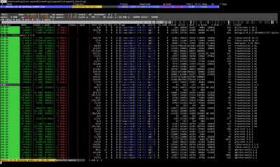

Getting started
Documentation
- reference
- blog
- upgrade to 2.0
- upgrade to 1.2
- contributing
- troubleshooting
- tuning
- fuzzing
- security audit (2020)
- projects using libtorrent
Contact
Extensions
- uTP
- extensions protocol
- libtorrent plugins
- streaming
- DHT extensions
- DHT security extension
- DHT store extension
- UDP tracker protocol
- HTTP seed
- multi-tracker
Bindings
introduction
libtorrent is a feature complete C++ bittorrent implementation focusing on efficiency and scalability. It runs on embedded devices as well as desktops. It boasts a well documented library interface that is easy to use. It comes with a simple bittorrent client demonstrating the use of the library.
The main goals of libtorrent are:
- to be CPU efficient
- to be memory efficient
- to be very easy to use
getting started
The tutorial is an introduction to using libtorrent (C++). Also see the reference documentation.

contribute
If your organization uses libtorrent, please consider supporting its development. See the contributing page for other ways to help out.
support
Please direct questions to the mailing list, general libtorrent discussion.
You can usually find me as hydri in #libtorrent on irc.freenode.net.
license
libtorrent is released under the BSD-license.
This means that you can use the library in your project without having to release its source code. The only requirement is that you give credit to the author of the library by including the libtorrent license in your software or documentation.
It is however greatly appreciated if additional features are contributed back to the open source project. Patches can be emailed to the mailing list or posted to the bug tracker.
acknowledgements
Written by Arvid Norberg. Copyright © 2003-2018
Contributions by Steven Siloti, Alden Torres, Magnus Jonsson, Daniel Wallin and Cory Nelson
Thanks to Reimond Retz for bug fixes, suggestions and testing
See github for full list of contributors.
Thanks to Umeå University for providing development and test hardware.
Project is hosted by github.